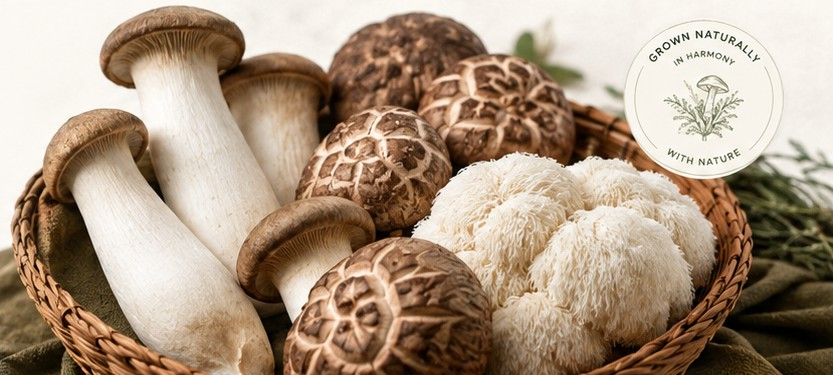

1
Yetiştirme Ortamı Hazırlığı
Sağlıklı misel gelişimini destekleyen, temiz ve uygun yetiştirme ortamlarını özenle hazırlıyoruz.

MANTARIM, basit bir inançla doğdu: iyi gıda aceleyle değil, özenle yetiştirilir. Özel mantarlara duyduğumuz merak; temiz üretime, dikkatli işçiliğe ve sofralara daha nitelikli ürünler ulaştırma tutkusuna dönüştü.
Üretim ortamından hasada kadar her mantar; doğallık, sürdürülebilirlik ve özen anlayışımızı yansıtır.

Her üretim partisinin size en taze ve en iyi haliyle ulaşması için temizlik, istikrar ve tazelik odaklı titiz bir süreç izliyoruz.
Sağlıklı misel gelişimini destekleyen, temiz ve uygun yetiştirme ortamlarını özenle hazırlıyoruz.

Saf mantar kültürü, hijyenin titizlikle korunduğu kontrollü bir ortamda yetiştirme ortamına aktarılır.
Sağlıklı gelişimi desteklemek için nem, sıcaklık ve hava akışı dikkatle yönetilir.

Mantarlar; doku, lezzet ve tazeliğin en iyi olduğu anda elle hasat edilir.

Her sipariş temizlenir, kontrol edilir ve çiftliğimizden mutfağınıza güvenle ulaşması için özenle paketlenir.